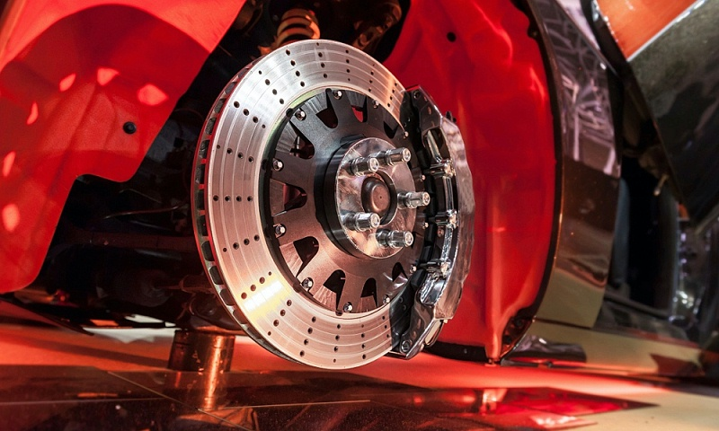
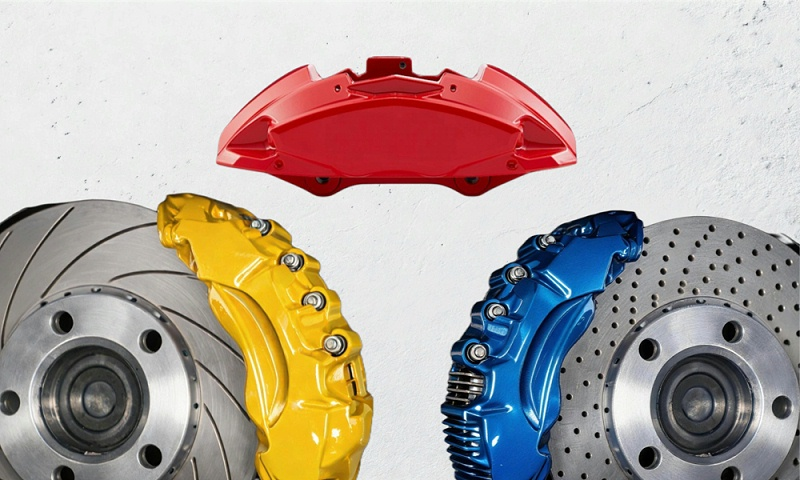
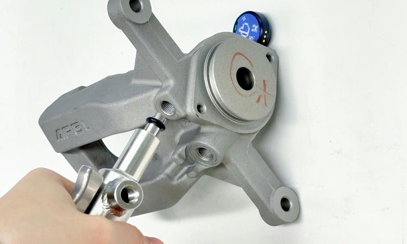
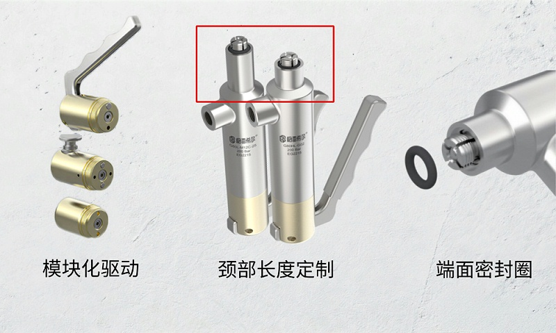

为什么卡钳必须做气密测试
Background
制动卡钳是整车制动系统中直接执行制动动作的部件，内部活塞腔体长期承受高压、高温及频繁摩擦。密封性不达标时制动液可能渗漏，导致制动力衰减、制动距离变长，极端情况下甚至引发制动失灵。行业测试通常涵盖真空密封、低压密封和高压密封等多个环节，每项对压力保持能力与泄漏量都有严格限定。测试能否顺利进行，很大程度上取决于快速密封接头在螺纹孔上的连接质量。
选型的四个维度
Selection
承压能力：卡钳气密测试涉及高压气体介质的充入与保持，不同测试环节压力等级差异较大，接头额定承压必须留有余量，确保整个测试压力区间内不泄漏、不变形。
驱动方式：手动装配线需要操作直观、手感清晰的压杆式接头；半自动或全自动工位适合气动驱动，便于与自动化控制系统集成；介于两者之间的场景可选按钮触发式半自动方案。应按产线实际自动化程度确定，避免接头与工位不匹配造成效率损失。
空间适应性：卡钳本体造型复杂，周边常布置传感器、夹具等设备，接头颈部长度不够灵活时，狭窄空间内可能无法顺畅接入螺纹孔；多规格颈部长度是应对结构干涉的关键。
维护便利性：批量生产中接头高频使用，密封圈与爪牙属于易损件。端面密封圈的快速更换设计与内部组件标准化更换能力，直接影响产线停机时间与综合效率。
内螺纹高压系列的应对
Solution

面向内螺纹高压测试的内螺纹快速密封接头最高可承压 350 Bar，覆盖卡钳从低压密封到高压耐压的测试需求；整体采用 316 不锈钢结构，保证高频插拔下的机械强度与抗磨损能力，避免结构变形导致密封失效。
模块化驱动设计是重点：手柄驱动（G80L）适用于手动线，压杆锁紧手感清晰；气压驱动（G80P）集成到半自动或全自动工位，由气动信号控制动作；按钮驱动（G80V）适合手动触发但希望减轻劳动强度的场景。三类驱动模块可在同一主体上快速互换，产线升级时无需替换整个接头，仅更换驱动模块即可匹配新工位需求，降低改造成本与备件库存压力。
空间方面提供多种颈部长度可选，部分型号达到 12.5 mm 或 25.5 mm，便于主体避开周围障碍物。维护方面，前端端面密封圈采用易更换设计，材质可按介质选配：常规气密测试用丁腈橡胶，涉及制动液或特殊油液时可换为氟橡胶等耐化学材质；部分爪牙带流量孔设计可缩短测试时间，内部标准化组件在磨损时可整组更换，无需现场复杂拆解调试。